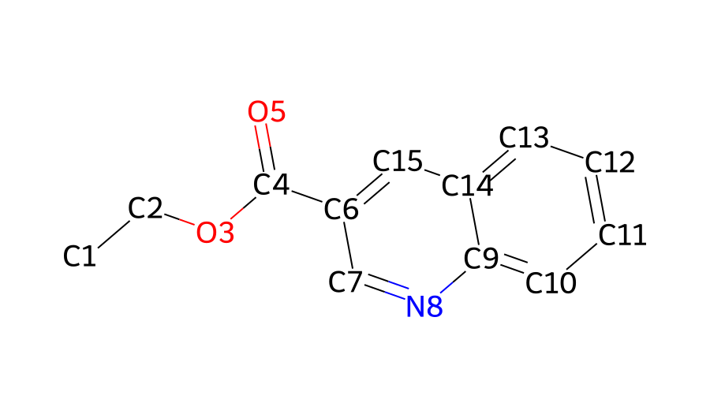

这道题在做什么
一句话说明。 一张核磁共振谱里有许多氢和碳的信号，需要判断它们各自来自哪个原子。这里给你分子图和一批去掉标签的粗峰窗，请把信号配回正确的原子，并估计每个信号在谱上的位置。
| 术语 | 通俗解释 |
|---|---|
| 化学位移（ppm） | 信号在谱轴上的位置。相同元素的原子处于不同化学环境时，信号可能落在不同位置。 |
| 归属 | 判断一条信号来自分子里哪一个原子，或哪一组给出同一条信号的原子。 |
| 峰窗 | 一个信号所在的大致范围。多个信号可能共用一个窗口，窗内的先后顺序仍需判断。 |
| 峰包 | 本题按原档案的归属把同一位置的一条或两条氢线放在一起，只去掉位置标签。氢、碳峰包独立编号。 |
为什么值得做。 把两个相似位置的峰互换，预测的绝对位移可能仍然很接近，但组间差的正负会翻转。本题 用同一批数据分别检查位点误差、组间差和方向，观察模型能否把相似位置区分开。
你要交什么。 在空白表中填入 54 个 ppm 数值。十个评分分项合成满分 100 分。只按峰窗中位数填表的基线得 14.38 分，官能团经验基线得 43.82 分。
v2 改题
T02、T03、T09 的目标位置改用 A、B 编号。每个核种有四个候选峰，其中有外观和真峰相近的模拟杂峰。面积、候选相关与干扰由模拟生成，目标位移沿用原核磁档案。
| 题号 | 需要区分什么 |
|---|---|
| T02 | 四个 2H 双峰各自都近似线性。用稀释对照筛出共用增益的信号，再沿匿名碳图确定两组等价位点的顺序。 |
| T03 | 一个长程锚可同时解释链段两端。需用另一个锚定方向，并核对叠峰产生的错误氢碳配对。 |
| T09 | 杂峰能给出相近的位移，同时把碳差方向翻转。还要提交选中的氢峰号和碳峰号。 |
本地枚举中，每题合用稀释、HSQC 和 HMBC 后各剩 1 个可行归属；去掉任一类证据后至少有 2 个。新版保留 54 个数值的计分规则，三个改题额外报告 12 个峰号的命中数。v2 尚待三家模型重跑。
v1 技术题面
目标
预测 T01–T10 指定位置的 ¹H 和 ¹³C 化学位移。每题含 2–4 组位点。氢只有一条归属时填 single。同一碳有两条分列的氢线时，按该碳内的 ppm 从低到高填 low 和 high。同一组等价原子共填一条归属。
背景与数据
数据来自原核磁数据库的四个样例分子，使用 CDCl₃ 条件下的档案归属。一个母分子用于公开样例，三个母分子用于测试，分别出 3、3、4 题。每个测试分子的所有目标值先一起遮盖，再生成该分子的公共控制表。公开的峰窗由档案位移分箱得到，积分、峰形和表观耦合常数 J 来自档案字段。
输入
每个分子给编号结构、采集条件、部分已归属的控制位点，以及无位置标签的 ¹H 和 ¹³C 峰包。位移窗左闭右开。同一序号的氢、碳峰包彼此独立。公开的分子图、带原子编号的 SMILES 和机器可读数据随包提供。
| 题号 | 母分子 | 预测对象 |
|---|---|---|
| T01 | P02 | 同一分子里的两个酯乙氧基 |
| T02 | P02 | 两组对称的芳环氢及相连碳 |
| T03 | P02 | 同一条侧链上的两个亚甲基 |
| T04 | P03 | 有甲基取代的一侧芳环 |
| T05 | P03 | 另一侧稠合芳环的四个位点 |
| T06 | P03 | 螺环中三个 CH₂ 的氢、碳归属 |
| T07 | P04 | 外烯的两条氢线和内烯 CH |
| T08 | P04 | 两类含氧环境的次甲基 |
| T09 | P04 | 碳位移接近的两个甲基 |
| T10 | P04 | 相邻 CH₂ 各自的成对氢线 |
输出
将 test/prediction-template.csv 另存为 prediction.csv，逐行填写 delta_ppm，保持前四列不变。每个键只填一行。可另附 150 字以内的简答，说明一条归属证据和一个无法由粗窗确定的量。简答用于复盘。
case_id,group_id,nucleus,slot,delta_ppm
D00,C1,1H,single,1.47
D00,C1,13C,single,14.4
D00,C2,1H,single,4.49
D00,C2,13C,single,61.5评分
¹H 与 ¹³C 各计五项，各占 50 分。组间差按题面指定的第二组减第一组。双氢组先取同碳两条氢线的算术平均。每个母分子内部先平均题分，再对三个母分子等权汇总。D00 只用于检查接口。
| 分项 | 分值 | 计分方法 |
|---|---|---|
| 位点 | 16 | 各线的绝对位移误差，计分后平均。 |
| 组间差 | 15 | 预测差与档案差的绝对误差，计分后平均。 |
| 方向 | 8 | 正、负、近并三个方向分类的正确率。 |
| 系统偏移 | 4 | 同题同核种的有符号误差取均值，再计绝对误差。 |
| 整组命中 | 7 | 同题同核种所有位点均在命中界内得满项分。 |
位点、组间差、系统偏移的得分率为 max(0, 1 − 绝对误差 / 标尺)。下列数值以 ppm 为单位，近并界和命中界均包含边界。
| 核种 | 位点 | 组间差 | 近并界 | 系统偏移 | 整组命中界 |
|---|---|---|---|---|---|
| ¹H | 0.25 | 0.30 | 0.03 | 0.20 | 0.12 |
| ¹³C | 2.5 | 2.8 | 0.25 | 2.0 | 1.25 |
约束
使用作答包内的数据、自身已有知识和本地算术。提交不超过 64 KiB，每行一个范围在 ±1000 ppm 内的有限数值。缺行、重复、未知键、带单位的数值，或同一碳的 high 小于 low，都会导致格式拒收。超出粗峰窗的有效预测仍按误差计分。
完成条件
提交表包含 T01–T10 的 54 行预测并通过格式检查。将作答包解压后，在 public 目录运行以下命令。
python3 check.py --inputs test/inputs.jsonl --predictions prediction.csv资源
- v2 离线作答包（ZIP）。含图文题册、编号分子结构、已填样例、模拟观测、提交模板和格式检查器。
- v1 作答包（ZIP）。与下方的模型试跑成绩对应。
- 解压后可打开
public/题册.html查看每题的控制表、峰包和位点定义。

元信息
- 领域
- 化学 · 核磁共振谱学
- 任务
- 位移预测 · 信号归属
- 来源
- 有机分子核磁数据库样例
- 验证范围
- 三个独立测试母分子。以数据库归属计分，试题标尺属于 本题规则。三家模型各有一份按相同协议拼合的完整答卷。
v1 试跑评分
整卷首轮发生输出截断。最终三家采用相同的分批口径，P02、P04 按分子作答，P03 逐题作答。模型只接收对应的公共题面、编号结构和模板。截断轮次不计入下表。
| 模型 | 总分 /100 | ¹H MAE（ppm） | ¹³C MAE（ppm） | ¹H 方向 | ¹³C 方向 |
|---|---|---|---|---|---|
| DeepSeek | 59.17 | 0.099 | 3.369 | 9/15 | 8/15 |
| GLM | 51.77 | 0.179 | 2.839 | 10/15 | 6/15 |
| Kimi | 58.83 | 0.227 | 1.962 | 10/15 | 12/15 |
| 题号 | DeepSeek | GLM | Kimi |
|---|---|---|---|
| T01 | 95.37 | 97.17 | 97.36 |
| T02 | 95.44 | 85.47 | 95.57 |
| T03 | 48.80 | 49.20 | 50.02 |
| T04 | 70.57 | 22.03 | 25.89 |
| T05 | 17.21 | 30.12 | 39.28 |
| T06 | 44.94 | 23.79 | 51.71 |
| T07 | 43.51 | 63.79 | 67.07 |
| T08 | 71.36 | 71.36 | 55.19 |
| T09 | 50.04 | 43.73 | 60.73 |
| T10 | 48.72 | 32.01 | 43.13 |
读分数
- T02 的官能团经验基线为 86.82 分。靠芳酰基和靠饱和链的两组环境已拉开距离。
- T03、T09 都出现三家答对氢方向、答反碳方向的情况。T10 三家均未能同时判对两个核种。
- T05 三家均低于 40 分。T04 拉开了最大的分差，同一题的碳位点误差是主要区别之一。